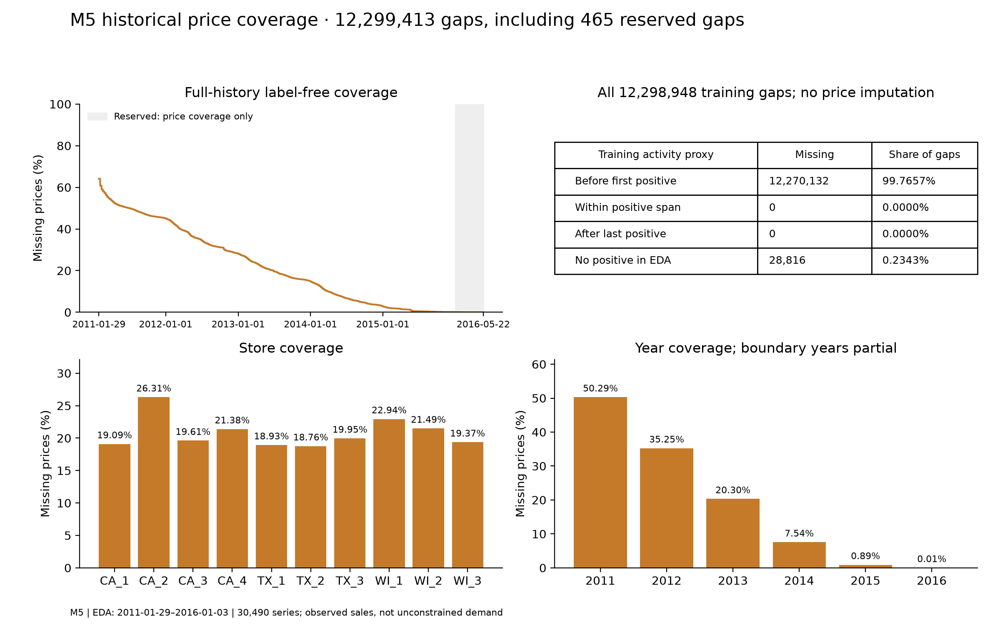
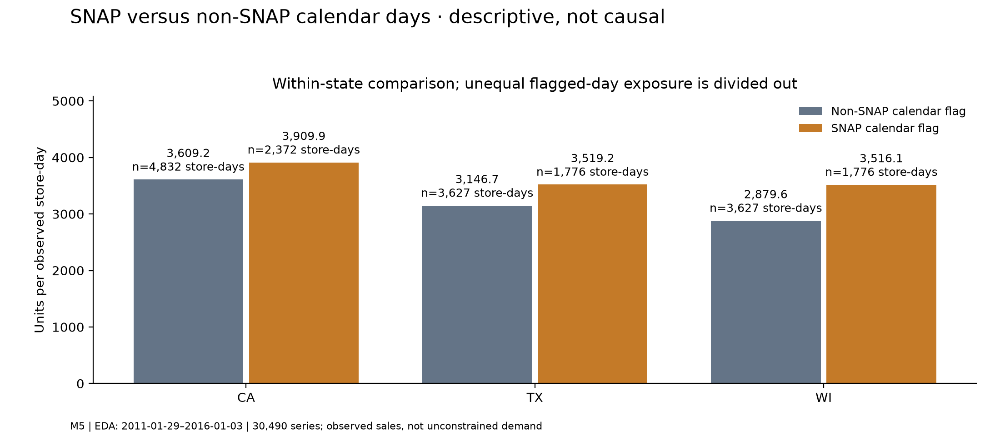
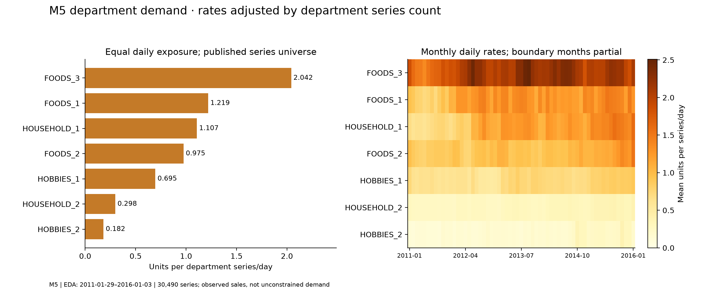

Within-week ratios with pointwise bootstrap intervals and normalised monthly profiles.
2013-01-01–2017-08-13; all 500 series.
Key Finding: Sunday has the highest normalised weekday ratio (1.192); monthly profiles also vary.
Forecasting Implication: Include weekly seasonal naive as a baseline and test origin-safe calendar effects; aggregate seasonality is not a forecast score.
500 four-week-block resamples, seed 42; pointwise 95% intervals, not causal estimates. Monthly profiles use complete years.
Series-level zero percentages and the distribution of defined positive all-sales CVs.
2013-01-01–2017-08-13; all 500 series.
Key Finding: There are 1 zero-sale observations (0.000118624%) in this training prefix.
Forecasting Implication: Preserve zeros and use denominator-safe metrics; changing aggregate volatility may warrant checking stability across rolling origins.
Recorded zeros are retained. All-sales CV is undefined for M5's 16 all-zero histories. Store Item CV uses readable linear decimal ticks.
Aggregate 28-day coefficient of variation and the daily percentage of zero-selling series.
2013-01-01–2017-08-13; all 500 series.
Key Finding: There are 1 zero-sale observations (0.000118624%) in this training prefix.
Forecasting Implication: Preserve zeros and use denominator-safe metrics; changing aggregate volatility may warrant checking stability across rolling origins.
The first 27 rolling statistics are undefined. Store Item zero breadth is shown as an exact count; M5 breadth is a percentage.
Full-population tail probabilities and clearly labelled retained extreme examples.
2013-01-01–2017-08-13; all 500 series.
Key Finding: The maximum recorded training observation is 231 units; the 99th percentile is 134.
Forecasting Implication: Report both MAE and RMSE so large misses remain visible; retain source observations unless independently shown erroneous.
The empirical tail uses every training observation. The saved top-20 table supplies ten labelled examples; ties are not exhaustive and extremes are not declared errors.
Within-week ratios with pointwise bootstrap intervals and normalised monthly profiles.
2011-01-29–2016-01-03; all 30,490 series.
Key Finding: Saturday has the highest normalised weekday ratio (1.210); monthly profiles also vary.
Forecasting Implication: Include weekly seasonal naive as a baseline and test origin-safe calendar effects; aggregate seasonality is not a forecast score.
500 four-week-block resamples, seed 42; pointwise 95% intervals, not causal estimates. Monthly profiles use complete years.
Series-level zero percentages and the distribution of defined positive all-sales CVs.
2011-01-29–2016-01-03; all 30,490 series.
Key Finding: There are 37,800,354 zero-sale observations (68.837442993%) in this training prefix.
Forecasting Implication: Preserve zeros and use denominator-safe metrics; changing aggregate volatility may warrant checking stability across rolling origins.
Recorded zeros are retained. All-sales CV is undefined for M5's 16 all-zero histories. Store Item CV uses readable linear decimal ticks.
Aggregate 28-day coefficient of variation and the daily percentage of zero-selling series.
2011-01-29–2016-01-03; all 30,490 series.
Key Finding: There are 37,800,354 zero-sale observations (68.837442993%) in this training prefix.
Forecasting Implication: Preserve zeros and use denominator-safe metrics; changing aggregate volatility may warrant checking stability across rolling origins.
The first 27 rolling statistics are undefined. Store Item zero breadth is shown as an exact count; M5 breadth is a percentage.
Full-population tail probabilities and clearly labelled retained extreme examples.
2011-01-29–2016-01-03; all 30,490 series.
Key Finding: The maximum recorded training observation is 763 units; the 99th percentile is 15.
Forecasting Implication: Report both MAE and RMSE so large misses remain visible; retain source observations unless independently shown erroneous.
The empirical tail uses every training observation. The saved top-20 table supplies ten labelled examples; ties are not exhaustive and extremes are not declared errors.
Full-history price gaps by date/store/year, plus the training-only activity partition.
2011-01-29–2016-01-03; all 30,490 series. Label-free price coverage additionally extends through 2016-05-22.
Key Finding: 12,299,413 full-history price gaps remain null; 12,270,132 training gaps precede first positive sale, and 28,816 occur in histories with no training positives.
Forecasting Implication: Use only origin-available prices and explicit missingness indicators; no automatic backfill or stockout inference.

Coverage panels use full-history price fields only. Activity categories use training sales only; the 465 reserved gaps have no sales-activity analysis.
Product missing-price rates and their descriptive relationship to series zero-sales rates.
2011-01-29–2016-01-03; all 30,490 series. Label-free price coverage additionally extends through 2016-05-22.
Key Finding: 12,299,413 full-history price gaps remain null; 12,270,132 training gaps precede first positive sale, and 28,816 occur in histories with no training positives.
Forecasting Implication: Use only origin-available prices and explicit missingness indicators; no automatic backfill or stockout inference.
The left panel uses full-history price coverage; the right uses training-only sales/price summaries. Neither establishes stock availability.
Within-state units per store-day, with the actual flagged/non-flagged exposures.
2011-01-29–2016-01-03; all 30,490 series.
Key Finding: SNAP / non-SNAP mean units per store-day: CA: 3,909.9 versus 3,609.2; TX: 3,519.2 versus 3,146.7; WI: 3,516.1 versus 2,879.6.
Forecasting Implication: Consider calendar flags only under an origin-availability contract; do not interpret these differences causally.

Means divide by actual observed store-days within each state/flag. Different dates, holidays and assortment remain confounders; flags are not observed customer benefit use.
Daily rates per department series and monthly mean daily rates, not raw unequal totals.
2011-01-29–2016-01-03; all 30,490 series.
Key Finding: Mean daily rates range from 0.182 (HOBBIES_2) to 2.042 (FOODS_3) units per series.
Forecasting Implication: A global model may share information within hierarchy groups; compare rate and sparsity differences before choosing that structure.

Each rate divides by the department's published series count. Complete daily training coverage is used; monthly heatmap boundary months may be partial.
No expected image files are missing or unreadable. The targeted presentation issues are resolved; these analytical limits remain.
ADI/CV² thresholds and aggregate seasonality are descriptive, not guarantees of individual-series forecastability.
M5's 45 zero-CV² histories need a labelled positive display floor on a log scatter; 21 undefined histories appear in the separate classification figure.
SNAP and event comparisons are descriptive: date composition, holidays, assortment and other confounders are uncontrolled.
Department rates use a fixed published series universe, not independently observed assortment or stock availability; boundary heatmap months may be partial.
Retained extreme examples are not an exhaustive tie list or proof of invalid data; only the histogram tail is a full-population distribution.
Representative panels have independent y-scales and explicitly different windows. They are illustrations, not sampling-based population estimates.
Historical price coverage extends through 2016-05-22 without inspecting reserved sales targets. The 465 reserved-period price gaps have no activity interpretation.
Observed sales may be constrained demand. No measured inventory savings, causal effects, forecasting winner or direct cross-source transfer is established.
Training-period price-gap reconciliation
Training-period missing-price relation
Observations
Before first positive
12,270,132
Within positive-sales span
0
After last positive
0
No positive in EDA
28,816
Training missing-price total: 12,298,948. Another 465 gaps occur in reserved periods: only their price coverage was examined. Whole-history total: 12,299,413. No prices were imputed.
Evidence, verification and next steps
Existing images were decoded and compared with disposable chart renders from the current small EDA tables: exact PNG pixels and normalised SVG artist content. Saved counts, ratios, date limits and major marginal sums were cross-checked. This confirms the figures' bindings to saved inputs; it does not constitute a new independent raw-data audit.
The next planned task is review of the 28-day protocol, with separate source benchmarks, origin-safe inputs and explicit metric coverage. Phase 3 has not begun. The independent Claude audit remains after Phase 4 and before Phase 5.
Rebuild this review: python -m intelligent_demand.exploration.visual_review. No server, CDN, web font, external script or internet connection is needed. Move the reports/eda and reports/figures directories together; some images and all analytical tables are intentionally excluded from Git.